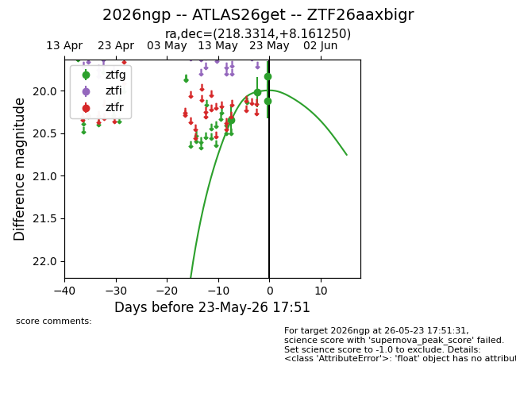
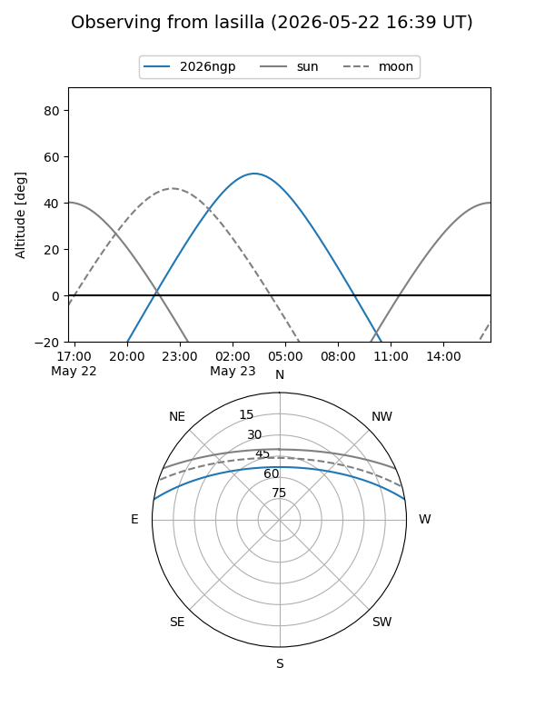
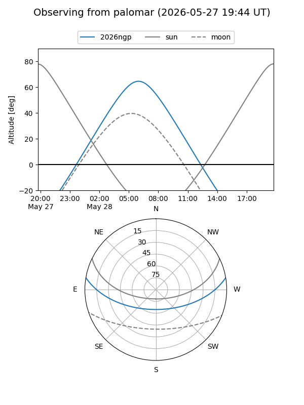
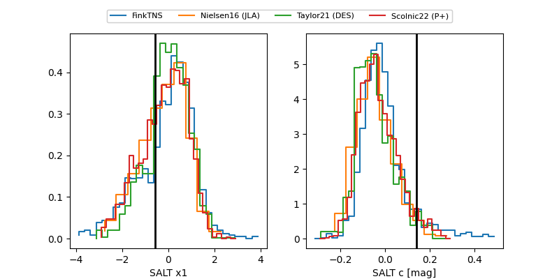

2026ngp
Target 2026ngp at 2026-05-23 17:53
Aliases and brokers:
lsst-FINK: link
lsst-Lasair: link
lsst-ALeRCE: link
ztf-FINK: link
ztf-Lasair: link
ztf-ALeRCE: link
TNS: link
YSE: link
alt names
ZTF26aaxbigr (ztf,fink_ztf)
2026ngp (tns,yse)
ATLAS26get (atlas)
Coordinates:
equatorial (ra, dec) = 218.3314,+8.16125
equatorial (HMS+DMS) = 14:33:19.53,+08:09:40.50
galactic (l, b) = (359.4904,+59.32467)
Flags:
TNS confirmed: nan
Photometry:
last ztfg=20.12
4 ztfg detections
Lightcurve

Visibility


Additional plots
